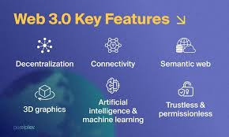

Web 3.0, also known as the "Semantic Web" or "Web of Data," represents the next evolution of the World Wide Web. It is characterized by the integration of artificial intelligence, machine learning, and semantic technologies to create a more intelligent and interconnected web experience.
Web 3.0 aims to enable machines to understand and interpret data in a more human-like way, allowing for more personalized and context-aware interactions. It focuses on the use of linked data, ontologies, and natural language processing to create a web that can understand the meaning and relationships between different pieces of information.
With Web 3.0, users can expect a more immersive and interactive web experience, where applications can provide more relevant and personalized content based on user preferences and context. It also has the potential to enable new forms of collaboration and data sharing, as well as enhance the capabilities of virtual assistants and other AI-powered applications.